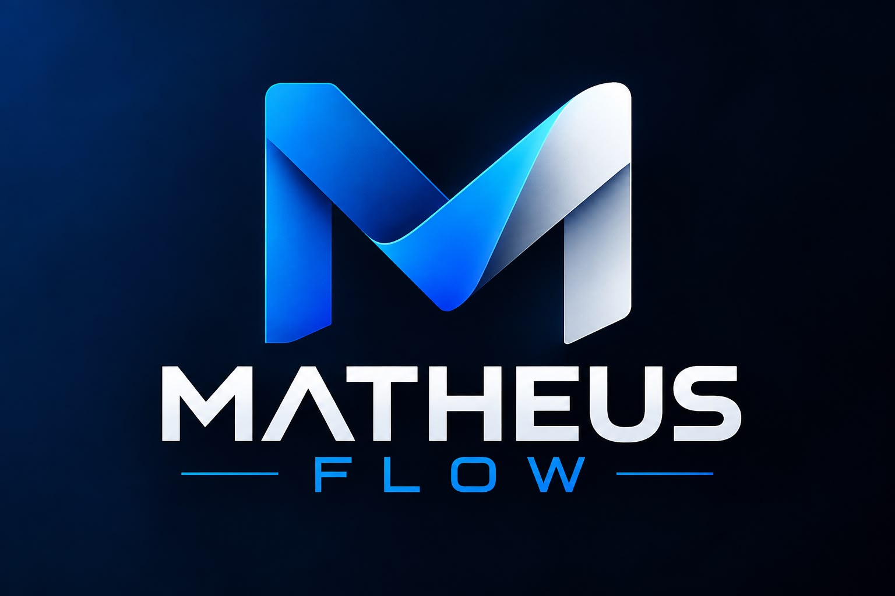

SAP
Fundamentos de SAP SD, SAP BTP, SAP S/4HANA Cloud e SAP SuccessFactors.
Disponível para estágio em TI
Estudante de Análise e Desenvolvimento de Sistemas
Em transição de carreira para Tecnologia da Informação — trazendo experiência profissional internacional, atendimento a clientes e ferramentas digitais para uma formação em construção em desenvolvimento de sistemas, SAP e dados.
01 · Sobre
Estou construindo minha carreira em Tecnologia da Informação a partir de uma base pouco convencional: passei por um intercâmbio internacional trabalhando em cozinhas multiculturais na Irlanda, atuo atualmente com atendimento a clientes e marketing digital na VedaSystem e já organizei operações administrativas no Brasil. São experiências que me ensinaram disciplina, trabalho em equipe sob pressão e comunicação — habilidades que levo agora para a área técnica.
Hoje curso Análise e Desenvolvimento de Sistemas na ESAMC Santos e venho me aprofundando em SAP, bancos de dados, Inteligência Artificial e UX/UI. Estou no início dessa jornada em TI, mas chego a ela com experiência real de mercado, vivência internacional e vontade de aprender na prática.
02 · Conhecimentos
Conhecimentos construídos em cursos formais e na graduação em ADS.
Fundamentos de SAP SD, SAP BTP, SAP S/4HANA Cloud e SAP SuccessFactors.
Introdução à linguagem de programação do ecossistema SAP, com foco em lógica e estrutura de programas.
Fundamentos de bancos de dados relacionais e da linguagem SQL, base da grade curricular de ADS.
Estudo dos fundamentos de Inteligência Artificial e de seu uso como ferramenta no dia a dia da TI.
Fundamentos de UX/UI Design, com foco em princípios de usabilidade e experiência do usuário.
Base construída ao longo da graduação em Análise e Desenvolvimento de Sistemas.
03 · Experiência
Registrada como um histórico, na ordem em que aconteceu — da mais recente para a mais antiga.
atual · em andamento
VedaSystem — Guarujá, Brasil
out/2024 — fev/2026
Amicus Restaurant — Cork, Irlanda
Experiência profissional internacional em ambiente multicultural, com atuação na preparação e organização da cozinha.
out/2024 — fev/2026
14A Restaurant — Cork, Irlanda
Atuação na cozinha e na preparação de pratos, em experiência profissional internacional.
experiência anterior
Barcas Santos/Guarujá — Santos, Brasil
04 · Formação
ESAMC Santos
05 · Cursos
06 · Projetos

Sistema web para cadastrar clientes, registrar chamados e acompanhar cada solicitação por status, com indicadores em um dashboard.
Abrir protótipo ↗07 · Idiomas
Desenvolvido durante intercâmbio internacional
08 · Contato
Estou em busca de oportunidades de estágio ou início de carreira em TI. Envie uma mensagem ou entre em contato pelos canais abaixo.